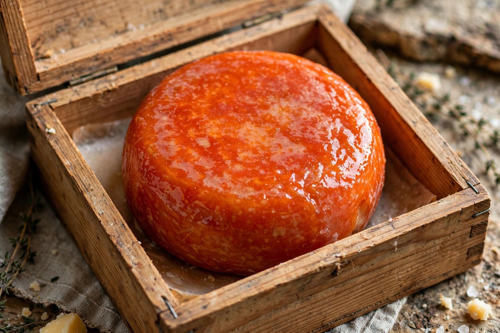

From Wikipedia, the free encyclopedia
| Washed-rind cheese | |
|---|---|
 | |
| Type | Cheese |
| Key microbe | Brevibacterium linens |
| Notable examples | Époisses, Munster, Limburger, Taleggio, Reblochon |
Washed-rind cheeses are cheeses whose surfaces are periodically washed during ripening — with brine, beer, wine, spirits or other liquids — to encourage the growth of a distinctive surface flora, principally the bacterium Brevibacterium linens. The resulting rind is typically moist, orange-red to brown in colour, and strongly aromatic, while the interior (pâte) is often milder, supple and creamy by contrast. They are also called smear-ripened or smear cheeses.
Young cheeses are turned and rubbed or brushed with the washing solution several times a week in humid cellars. The salt and moisture suppress moulds and favour salt-tolerant yeasts (such as Geotrichum candidum) and then coryneform bacteria, especially B. linens, which pigments the rind orange and produces the sulfur compounds responsible for the characteristic pungent, savoury, sometimes meaty or "foot-like" aroma — B. linens also grows on human skin. Washing also keeps the rind from drying and helps enzymes penetrate, softening the paste from the outside in.
The technique is strongly associated with medieval monasteries, particularly in France, Germany, Belgium and northern Italy: monks washed their cheeses in brine, beer or marc spirits, and many classic washed-rind cheeses — Maroilles, Munster, Pont-l'Évêque — trace their origins to monastic dairies. Legend holds that Époisses was so pungent it was banned from the Paris Métro.